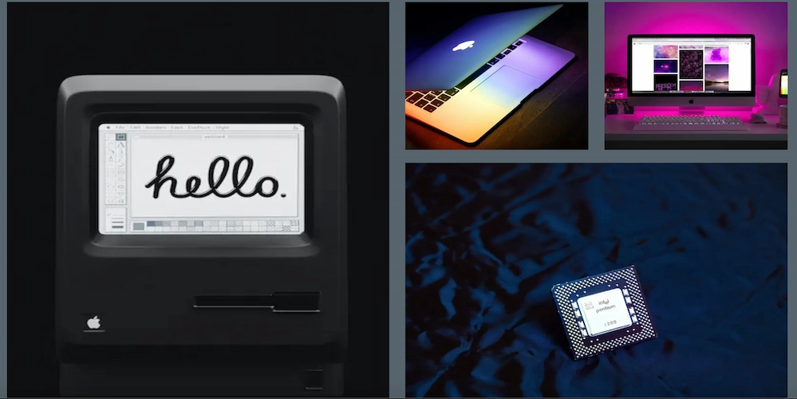

Web
I tema 2 "Grundlæggende Web" har jeg fået en generel forståelse af gestaltlovene. I forbindelse med at skulle opbygge et website, har vi arbejdet med moodboard, styletile, mockup, wireframes og layoutdiagram. Lært at hente fonte og bruge dem i VScode. Har kompromeret billeder om til webp.
I grundlæggende web har jeg også arbejdet med CSS grid og flexbox, hvor vi har lært at placere billeder ved siden af hinanden. Vi har skulle sørge for at vores hjemmesider har været responsive og valide.
Mine projecter
Studiestartsprøven
Under studiestartprøven, var det første gang vi rigtig skulle arbejde med VScode. Vi havde fået udleveret stort set alt indhold til sitet. Så vi arbejde primært med at sætte indholdet rigtigt op inde i HTML og stylede det med CSS.
Link til Studiestartsprøven Emnesite
Vores anden store opgave i tema 2, var at lave et emnesite om en passion eller noget vi fandt spændende. Her valgte jeg at lave en hjemmeside om min rejse til Japan, hvor jeg tog et par store seværdigheder ud og skrev om mine oplevelser. Her prøvede jeg at inddrage så meget som muligt jeg havde lært til den første opgave.
Link til Emnesite